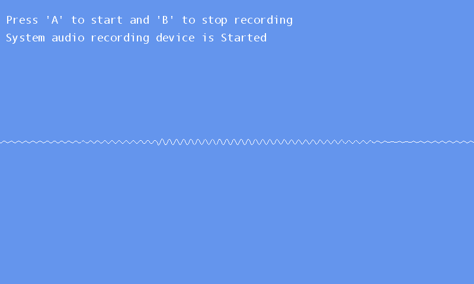

Microphone Echo
Ported from Microsoft's XNA 4.0 Microphone Echo Sample for Windows, Xbox 360 and Windows Phone.
Source for this sample on GitHub ↗

Play ▸Opens in a new tab. Allow microphone access, focus the game and press A to start. Use headphones to hear the echo without feeding it back into the microphone.
About this sample
Capture live microphone audio, add a delayed echo and play it back through the speakers. The sample demonstrates microphone capture events and streaming playback with DynamicSoundEffectInstance.
A circular buffer adds a 150 ms delay with half-strength feedback. The screen shows the selected microphone, recording state and the processed audio waveform.
Controls
| Action | Control |
|---|---|
| Start recording | A, gamepad A or tap the screen |
| Stop recording | B, gamepad B or double-tap the screen |
| Close the sample | Escape or gamepad Back |